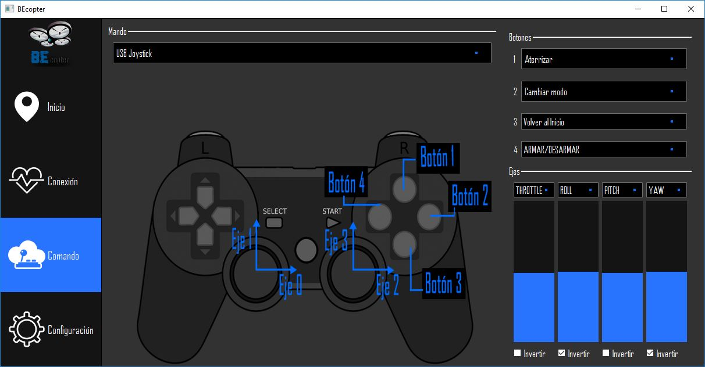

Pestaña de Comando¶
La pestaña COMANDO es una de las primeras en estar habilitadas, ya que la selección de un joystick para el control del vehículo es de suma importancia para la navegación del mismo. Es por tal motivo que esta pestaña proporciona la opcion de seleccionar un joystick que este conectado al equipo en donde este corriendo BEcopter y poder asignarle a una cierta cantidad de acciones predefinidas.
Mando¶
En esta sección podemos encontrar una lista con Joysticks reconocidos por BEcopter. En donde se podrá ver su respectiva configuración, en cada botón y sticks del joystick.
Advertencia
El gráfico del comando mostrado en pantalla puede no representar estrictamente la numeración de los botones en el jostick real.
Atención
Una manera de corroborar la correcta asignación de acciones es mediante la consola dentro de la pestaña CONEXION
Botones¶
En este apartado se pueden asignar accesos rápidos a los botones, que pueden ser ejecutadas en tiempo real por el vehículo. Las opciones disponibles son:
- Aterrizar: Como se explicó en la pestaña de Inicio este comando le ordena al vehículo desender suavemente hasta no encontrar cambios en la altura del mismo.
- Cambiar Modo: En caso de necesitar cambiar el modo de un control manual o automático (entre otras opciones), esta opción es la que se debe seleccionar.
- Volver al inicio: En caso de necesitar que el vehículo regrese a la posición inicial de partida, por cierta circunstancia como por ejemplo : poca señal, poca bateria, el vehículo no se encuentre visible al piloto, etc. Esta opción es la indicada.
- Armar/Desarmar: Como medida de seguridad el vehículo cuenta con la opción de «trabar o destrabar» la habilitación para comenzar a volar (el objetivo de este comando es evitar despeges/vuelos accidentales) por lo tanto esta opción alterna entre el desarmado y armado del vehículo.
Ejes¶
Los ejes estan asociados a los valores proporcionados por las palancas «analógicas» comunmente llamadas. Estos valores serán reflejados en las barras ubicadas en la parte inferior izquierda de la pestaña de COMANDO con la opción de poder asignarles los siguientes movimientos
- THROTRLE: Potencia brindada a los motores.
- ROLL: Giro sobre el eje X del sistema de referencia.
- PITCH: Giro sobre el eje Y del sistema de referencia.
- YAW: Giro sobre el eje Z del sistema de referencia.
- Invertir eje: Por último y en la parte inferior de cada barra esta la opción de poder invertir el orden de los valores. Ya que existen casos en que los valores originales provenientes del periférico provienen en sentido contrario.